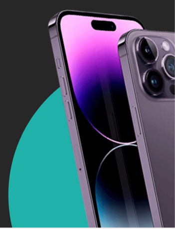

O Technic Connect é uma inovadora plataforma de assistência técnica para
eletrônicos, projetada para simplifciar e agilizar a conexão entre técnicos
especializados e clientes em busca de soluções para seus dispositivos. Com
o Technic Connect, oferecemos uma experiência conveniente e confiável,
garantindo que sesu eletrônicos sejam reparados com expertise e rapidez.
SOLICITE UM ORÇAMENTO. 